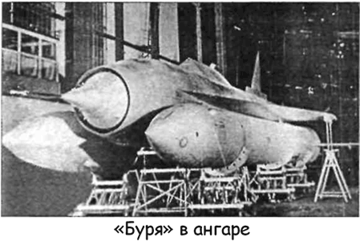

«Буря» против «Navaho»
Очевидный интерес американских военных, проявленный к тематике крылатых ракет в начале 50-х годов, не мог остаться «безнаказанным». Поэтому когда в 1954 году специалисты НИИ-88 приступили к работам по теме «Т-1»: «Теоретическое и экспериментальное исследование по созданию двухступенчатой баллистической ракеты с дальностью полета 7000–8000 км», параллельно была начата тема «Т-2»: «Теоретические и экспериментальные исследования по созданию двухступенчатой крылатой ракеты с большой дальностью полета».
В соответствии с постановлением правительства от 20 мая 1954 года Министерство авиационной промышленности инициировало работы по теме «Т-2» сразу в двух конструкторских бюро: в ОКБ-301 Семена Лавочкина и в ОКБ-23 Владимира Мясищева. Научным руководителем двух независимых проектов был назначен Мстислав Келдыш, занимавший в то время пост директора НИИ-1. Он входил и в состав королевского Совета Главных конструкторов и был прекрасно знаком с результатами разработок по «ЭКР».
Проект межконтинентальной крылатой ракеты, разрабатываемый у Лавочкина, получил название «Буря» («Изделие 350», «В-350», «Ла-350»).
Главным конструктором крылатой ракеты «Буря» Лавочкин назначил Наума Семеновича Чернякова (позднее он стал главным конструктором самолета «Т-4» в ОКБ Павла Сухого).
Эскизное проектирование «Бури» завершили уже к сентябрю 1955 году. Однако в сентябре 1956 вес боевого заряда, под который проектировалась ракета, был увеличен с 2100 до 2350 килограммов, что повлекло за собой изменения в конструкции и, соответственно, сказалось на сроках сдачи «Ла-350». Вес крылатой ракеты при этом несколько увеличился: стартовый вес достиг 95 тонн, вес маршевой ступени — 33 тонн.
Двухступенчатая ракета, как и предлагал Королев, имела первую ступень (две «боковушки») на двух четырехкамерных ЖРД «Р-11» («С2.1100») с турбонасосной системой подачи топлива конструкции ОКБ-2 Алексея Исаева. Два ускорителя обеспечивали стартовую тягу порядка 65 тонн каждый.
Масса первой ступени составляла 54 тонны. Двигатели обеспечивали доставку конструкции на высоту 17500 метров, где происходило разделение первой и второй ступеней.
Вторая (маршевая) ступень представляла собой крылатую ракету со среднерасположенным тонким треугольным крылом малого удлинения и симметричного профиля. Крыло имело стреловидность 70 по передней и прямую заднюю кромку. Крестообразное оперение было размещено в хвостовой части. Корпус ракеты имел цилиндрическую форму, немного суженную спереди и сзади; внутри его по всей длине проходил канал воздухозаборника маршевого сверхзвукового прямоточного воздушно-реактивного двигателя «РД-012У» конструкции ОКБ-670 Михаила Бондарюка. Двигатель обеспечивал тягу 7,75 тонны. Полость между стенками канала и наружной обшивкой фюзеляжа служила емкостью для топлива (за исключением центральной части, где располагался приборный отсек). Передняя часть корпуса представляла собой сверхзвуковой диффузор с трехступенчатым конусом.

Центральное тело диффузора одновременно являлось контейнером для боевой части.
Стартовала «Буря» вертикально с лафета, затем, в соответствии с заданной программой, проходила разгонный участок траектории, на котором управлялась газовыми рулями.
Затем они сбрасывались, и управление переключалось на воздушные рули. После разгона, когда скорость полета достигала нужного значения, воздушно-реактивный двигатель выходил на режим полной тяги, и на высоте 17,5 километра производилась расцепка ускорителей с маршевой ступенью.
После этого полет корректировался с помощью системы автоматического астронавигационного управления типа «Земля».
Вся система была рассчитана на дальность 8000 километров.
«Буря» летела с постоянной скоростью от 3,1 до 3,2 Маха.
При подходе к цели ракета должна была совершить противозенитный маневр, подняться на высоту 25 километров и оттуда резко спикировать на цель. На этом режиме происходило сбрасывание головного конуса с боезарядом.
По результатам самолетных испытаний вероятное отклонение от цели не должно было превышать 10 километров.
Техническая документация для «Бури» была подготовлена в 1957 году, и вскоре начали производство опытного экземпляра.
Параллельно с ним на заводе № 1 в Куйбышеве была запущена серия ракет для проведения летных испытаний.
Всего изготовили 19 ракет, и все они были использованы.
На этих ракетах впервые нашел применение новый для советского ракетостроения материал — титан. Этот металл, способный сохранять высокие механические свойства при значительных температурах, оказался незаменим в условиях длительного полета на больших сверхзвуковых скоростях.
Во время работы над «Бурей» в ОКБ-301 впервые в Советском Союзе была разработана и внедрена технология сварки титана, а также некоторые виды механической обработки этого материала. Вместе с титаном в конструкции «Бури» использовались и другие термостойкие материалы, применявшиеся для герметизации, различных покрытий, изоляции, остекления и так далее. Большинство из них к моменту создания «Бури» были не освоены в СССР, и их внедрение шло параллельно работам над ракетой.
Летно-конструкторские испытания ракеты «Буря» начались 31 июля 1957 года на полигоне Капустин Яр. Первый же пуск с наземной наводимой по азимуту стартовой установки (восьмиосная железнодорожная платформа, установленная на поворотной конструкции) состоялся 1 сентября 1957 года. При старте произошел преждевременный сброс газовых рулей, ракета через несколько секунд упала и взорвалась.
Во втором пуске ракета взорвалась в полете на 31-й секунде, в третьем — на 63-й секунде и в четвертом — на 81-й секунде полета. Только 22 мая 1958 года в пятом пуске успешно прошла расцепка ступеней ракеты и был запушен маршевый воздушно-реактивный двигатель. Затем вновь — три неудачных пуска.
Специалистам приходилось преодолевать проблемы, с которыми никто до них не сталкивался, а сроки поджимали.
Наконец после определенных доработок полоса неудач закончилась.
В девятом пуске 28 декабря 1958 года продолжительность полета «Ла-350» составила 309 секунд. В десятом и одиннадцатом пусках были получены рекордные для того времени результаты: ракета улетела на 1350 километров при скорости 3300 км/ч и на 1760 километров при скорости 3500 км/ч соответственно.
В двенадцатом пуске на «Бурю» установили систему астронавигации, но он был неудачным. В тринадцатом пуске ракета была оснащена модернизированными ускорителями с двигателями «С2.1150» и прямоточными маршевыми двигателями «РД-012У» с укороченной камерой сгорания; полет продолжался около 10 минут.
При пуске 2 декабря 1959 года ракета, оснащенная системой астронавигации, пролетела 4000 километров. Это был абсолютный рекорд. После выполнения программы полета ракета была развернута на 210 и далее летела по радиокомандам.
Испытания ракеты по короткой трассе (около 2000 километров) завершились. Начались испытания по длинной трассе.
Заместитель Лавочкина по испытаниям Леонид Закс рассказывал, что как-то в руки создателей «Бури» попал американский журнал, в котором была представлена карта СССР с нанесенными на ней трассами полетов советских ракет дальнего действия. Там были все ракеты, кроме «Бури». Дело в том, что на базах НАТО в Турции имелись системы наблюдения, которые засекали верхнюю часть траектории полета советских баллистических ракет. Опираясь на законы баллистики, можно легко рассчитать остальную трассу ракеты, место ее взлета и падения. Но «Буря» была создана по другому принципу; кроме того, эта ракета могла совершить маневр в любой заданный момент, поэтому по части ее траектории нельзя было рассчитать весь полет, определить место старта или попадания. И это тоже был успех.
Тем временем испытания продолжались. Следующие пуски (с пятнадцатого по восемнадцатый) были произведены по длинной трассе: полигон Владимировка (севернее Каспийского моря) — полуостров Камчатка.
Проектная дальность в 8000 километров достигнута не была, но результаты этих пусков позволили сделать вывод о возможности увеличения радиуса действия ракеты. Началась подготовка к серийному производству.
Однако к тому времени уже была поставлена на вооружение МБР «Р-7», вышла на летные испытания новая баллистическая ракета «Р-16» конструкции Михаила Янгеля. Эти ракеты могли преодолеть любую противовоздушную оборону тех лет, имели большую скорость полета и относительно простую конструкцию. Было принято решение ограничить стратегический ракетный парк страны баллистическими ракетами, и советские руководство сочло нецелесообразным создавать еще один носитель.
По поводу этого решения группа главных конструкторов обратилась с письмом к Никите Хрущеву с просьбой разрешить продолжение работ. Эту просьбу поддержали научный руководитель темы «Т-2» академик Келдыш и министр обороны Малиновский.
Хрущев в ответ заявил, что эта работа бесполезна, и поручил секретарю ЦК КПСС Фролу Козлову — второму после себя лицу в партийной иерархии — собрать всех заинтересованных лиц и разъяснить ошибочность их позиции.
На этом совещании заместитель Лавочкина Черняков попытался доложить о результатах пусков. Козлов его перебил:
«Ну что вы хвастаете, что достигли скорости 3700 километров в час. У нас ракеты теперь имеют скорость больше 20 000 километров в час». Черняков понял, что здесь технические аргументы бесполезны.
Когда появился Малиновский, Козлов в резкой форме сделал ему замечание, почему он поддержал просьбу о продолжении работ: «Ведь Никита Сергеевич сказал, что это бесполезно». Министр обороны не нашел ничего лучшего для защиты, кроме фразы: «Это меня конструктора попутали».
В конце концов было найдено «компромиссное» решение.
Семен Лавочкин предложил использовать «Бурю» как беспилотный фоторазведчик большой дальности или как ракету-мишень. Хотя работы по фоторазведчику начались еще в 1958 году, постановление правительства № 138-48 о такой разработке появилось лишь 5 февраля 1960 года; по этому же постановлению всякие работы над «Бурей» как стратегической ракетой прекращались. Оставшиеся пять ракет выделялись для отработки фоторазведчика.
Было произведено четыре пуска «Ла-350» в интересах создания фоторазведчика и скоростной высотной мишени для комплекса ПВО «Даль».
Однако в июне 1960 года Семен Лавочкин скончался.
Проект разведчика просуществовал до октября, а мишени — до начала следующего года, но и их закрыли.
Последняя «Буря» была пущена с полигона Капустин Яр 16 декабря 1960 года.
Интересно, что в 1955-5 7 годах в ОКБ-301 велось предэскизное проектирование экспериментальной крылатой атомной ракеты с ядерным прямоточным воздушно-реактивным двигателем конструкции Бондарюка. Работы по проекту «375» не получили значительного развития — крылатая атомная ракета получилась слишком большой.
На основе задела по «Буре» в ОКБ Лавочкина и Бондарюка шли работы по созданию воздушно-космического самолета и гиперзвукового прямоточного двигателя для него, но после смерти Семена Лавочкина и эта программа была прекращена.